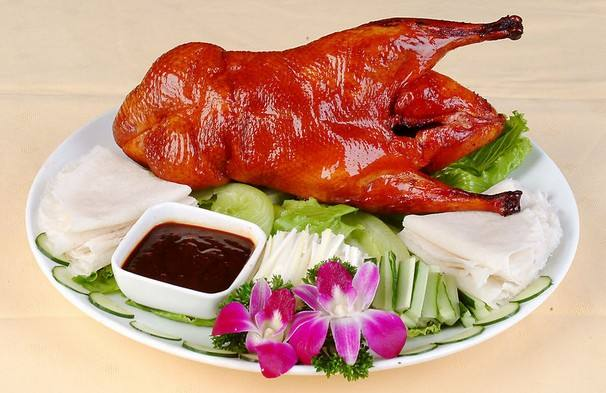

北京时间
北京烤鸭
北京烤鸭，脍炙人口，中外驰名。吃烤鸭，北京最著名的一家是在前门外的全聚德，专门卖这样菜，每天应市总在百把只，都要在前一两天预定，才能入座。他们自己有大的鸭场，养一种颈短、体短、纯白羽毛的“北京鸭”。这种鸭孵出后放养一两个月，就关到暗房里去群养，每批一间房，挤满了鸭子，它们活动不了，只能呆着沉睡。饲料是用糠麦拌曲捏成大拇指般的条子，晒干了水份，隔一两天逐只的抓出来，硬填塞进去。不需三个月就长得非常肥大，可以上菜了。全聚德砌有烤炉，一次可挂20只在炉里烤，因此称为“挂炉烤鸭”，整只鸭子在炉里烤，四面受热，温度平均，比手拿着叉在炉上转动当然烤了得好些。同时在烤以前，把宰的鸭子皮毛弄干净，然后吹胀它，在阴凉通风的地方晒干水份非常重要。这样烤出的鸭子，皮色鲜黄松脆，肉质也很细嫩，否则皮韧肉粗，就非上品了。此外还要讲究厨司的刀法，烤好的鸭子是用餐车推到食家席前片割的，层次的先皮后肉，要薄要匀，要分配肥瘦恰合客人的口味。附上的薄饼，也要讲劲道。裹葱白和甜酱吃，真是满口芳香，异常鲜美。剩下的骨架子，照例听客人的指示，加嫩豆腐或黄芽白做成汤菜，鸭油则用来熬蛋，做成类似布丁的溜黄菜，就算终席了。烤鸭声誉隆重，有“京师美馔，莫妙于鸭，而灸者尤佳”、“天下第一美味”等赞语。是盛名中外的代表菜之一。
